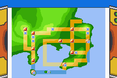
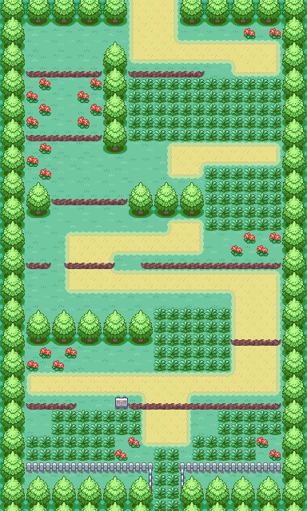
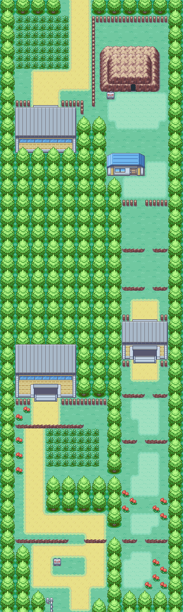
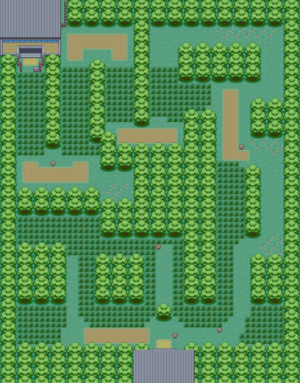

Casa

Al iniciar el juego aparecemos en el segundo piso de nuestra casa, bajamos al primer piso en donde encontraremos a nuestra madre y nos dira un dialogo sobre que nos estaba buscando el profesor Oak(cientifico pokemon de renombre).

Al terminar el dialogo nos dirigimos hacia la salida de la casa.
Pueblo Paleta

Al salir nos dirigimos hacia el Norte, en el camino que se ve en el mapa, aparecera el profesor Oak y nos llevara hacia su laboratorio en donde eligiremos nuestro inicial el cual sera Bulbasaur.
Laboratorio

Una vez que hayamos obtenido nuestro inicial, nos dirigimos hacia la salida, sin embargo nuestro rival nos detendra para tener un combate, una vez terminado el combate volvemos hacia la ruta que quisimos tomar al principio, la ruta 1.
Ruta 1

En la ruta nos dirigimos hacia el Norte y de esta manera comenzamos nuestra aventura.
Ciudad Verde

Una vez salimos de la ruta 1, llegaremos a Ciudad Verde, nos dirigimos directamente hacia la tienda azul, en donde encontraremos items y cosas que nos ayudaran en nuestra aventura, sin embargo, vamos porque debemos entregarle algo al profesor Oak. Si es necesario nos recuperamos la vida en el Centro Pokemon (edificio de techo rojo).
Una vez entregado el paquete, nos dirigimos hacia el norte de Ciudad Verde, en donde tendremos un mini-tutorial de como atrapar un Pokemon. Al finalizar continuaremos nuestra aventura por la Ruta 2.
Ruta 2

Continuamos hacia el Norte por la Ruta 2 hasta llegar al Bosque Verde.
Bosque Verde

Cruzando el Bosque Verde nos enfrentamos a todos los entrenadores (con nuestro inicial) que encontremos hasta llegar a la salida que se ve en la esquina superior izquierda.
Ciudad Plateada

Una vez salimos por Bosque Verde, continuaremos por la ruta 2 hacia el norte, nos curamos en el edificio con el techo rojo y nos dirigimos al edificio de techo marron, en donde se encuentra el lider de Gimnasio, con nuestro Bulbasaur nivel 10+ ya deberia de ser mas que suficiente y sencillo.
Demostracion del combate contra el lider
| Equipo de Brock | |||
|---|---|---|---|
| Pokemon | Tipos | Nivel | Movimientos |
| Geodude | Roca/Tierra | 12 | Tackle, Defense Curl |
| Onix | Roca/Tierra | 14 | Tackle,Bind,Endure,Rock Tomb |
Una vez terminado el combate ya habremos conseguido nuestro objetivo. Felicitaciones!
. . . . .